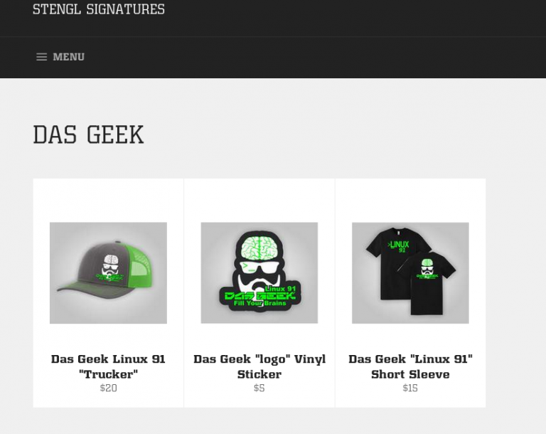

Thank you for considering supporting the DasGeek Channel and the work we’re doing as a community to spread the love of technology and learning. There are many ways you can support the channel and I’ve listed ones that cost nothing but time and others that help financially support the work.
You’re artistic talent. If you paint, draw, print, or create anything that could be used on the show or featured on the channel then I would love to see it. Our logos are community developed by Karl Schneider and the paintings that hang in my videos are from a local artist. I love seeing the work of the community and finding ways to incorporate it into the show. So if you create things then email them to me or send them to my P.O. Box on the contacts page and I will make sure to highlight it on a show. Please let me know if you want your name or company mentioned.
Watching the channel on Youtube. Following the channel and watching the content helps me tremendously. Subscribing and turning on notifications are even better. The more subs and more watch time the further Youtube will expand the reach of getting the channel recognized.
If you're interested in becoming a Patreon you can click this link here. Along with my sincere gratitude I also have setup a Patron only Telegram group for direct access and influence in the channel direction.
I also have setup a Ko-Fi account which comes with the same perks as Patreon and my sincere appreciation
If you make a donation to any FOSS project of $20 or more you can get access to my Telegram group. Just tweet me your donation and follow me on Twitter so I can DM you the link. Twitter
You can also purchase some DasGeek Swag and help spread the word!
